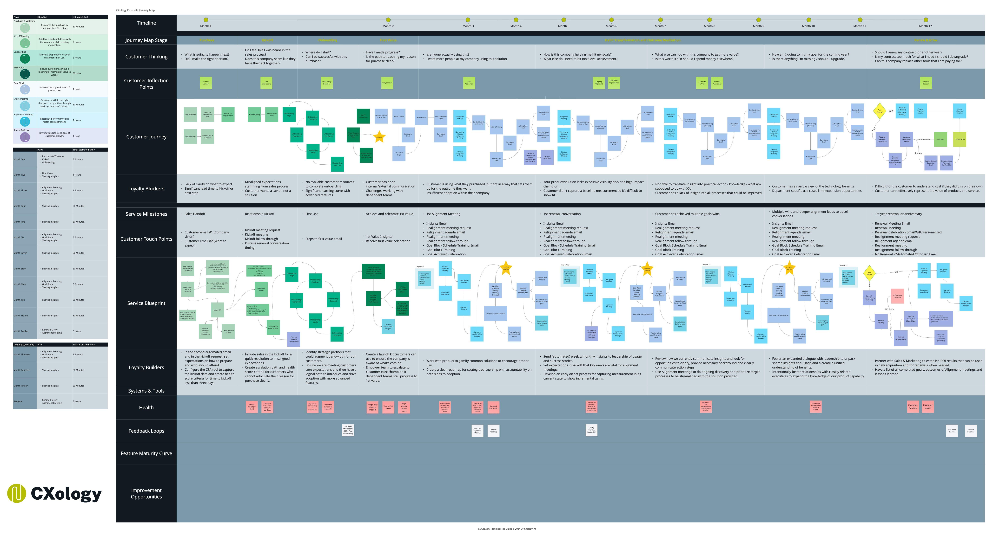

Twelve months. Eight rows. Every gap where customers are lost — and every lever to prevent it.

Most post-sale teams operate without a map. They have processes — onboarding checklists, QBR templates, renewal reminders — but no unified view of how a customer moves from "just signed" to "fully adopted, expanded, and renewed." That gap is where retention dies.
This artifact is the CXology Post-Sale Journey Map. It documents the entire 12-month customer lifecycle as a system: what the customer is thinking at each stage, where they're most likely to disengage, what your team needs to execute internally, and which signals tell you whether the relationship is healthy or at risk.
Retention is not an outcome you hope for. It is a system you design, execute, and measure.
Every element on this map reflects how retention actually fails — and what it takes to prevent that failure at scale.
The map reads left to right — Month 1 through Month 12 — and top to bottom across eight functional rows. Each row answers a different question about the customer relationship. Read them together and you see the full picture. Read any single row in isolation and you're managing a symptom, not the system.
What is running through the customer's mind at each point. Month 1: "Did I make the right decision?" Month 6: "Is this worth what I'm paying?" Month 12: "Should I renew?" This row drives behavior — if you don't know what it says, you're flying blind.
The eight moments where loyalty is built or broken. These are not random touchpoints — they are predictable forks in the relationship. Miss one and you're recovering from it for months. Hit them with precision and the renewal becomes a formality.
The observable behavioral path — what the customer is doing in the product and with your team at each stage. Adoption curves, usage patterns, escalation moments. This is the data layer that informs everything else.
The friction points that stop customers from getting value. Misaligned expectations. Poor internal communication. No defined success metric. Dependent teams not adopting. Every blocker on this map is something your team either created or failed to prevent.
Every deliberate communication between your team and the customer. Automated emails, kickoff meetings, insights reports, goal block reviews, celebration moments, renewal conversations. The touchpoint layer is where your plays execute.
Internal execution — what your CS team and cross-functional partners are doing behind the scenes. This is the operational layer most companies skip. Without it, your customer experience is only as good as whoever is on shift that day.
Specific actions that systematically increase the customer's likelihood of renewing and expanding. Not one-off heroics — repeatable plays any CSM can execute consistently. Builders are what turn a reactive team into a retention engine.
The measurement layer. Health scores, feedback loops, usage signals, engagement patterns. This is how you know whether the rows above are working — before the renewal conversation reveals the damage.
The lifecycle is not a flat line — it has distinct stages with different risks, different customer emotions, and different operational requirements. Understanding the shape of the journey tells you where to invest human attention and where automation can carry the load.
Highest emotional stakes. Buyer's remorse risk is real. The customer is validating their decision. Speed, personalization, and a clear path forward are non-negotiable.
Foundation-setting. Every misaligned expectation planted here becomes a retention problem at Month 9. The Kickoff is a strategic alignment meeting, not a product tutorial.
The inflection that determines whether the relationship has a future. First Value is a specifically scoped win that proves the product delivers. Without it, everything else is hope.
The messy middle. This is where most CS teams lose the thread. Value Blocks, Alignment Meetings, and Sharing Insights keep the customer progressing when momentum naturally stalls.
Where expansion opportunities surface and renewal positioning begins. Teams that skip regular alignment meetings arrive here with no evidence, no champion, and no leverage.
If the previous five stages were executed, the renewal is not a conversation — it's a conclusion. If they weren't, this is where you pay for everything that went unaddressed.
The journey map exposes something most teams would rather not see: the gaps. The spaces between what the customer is experiencing and what the team is doing. Between the blockers that exist and the builders that haven't been deployed. Between the signals that appear in the data and the actions that never get triggered.
| Failure Pattern | Where It Shows Up | NRR Impact |
|---|---|---|
| No IKT from Sales | Kickoff is a product demo, not alignment. CSM walks in blind. | High churn risk |
| First Value not defined | Month 3: customer can't articulate what success looks like. | Low adoption |
| No Alignment Meetings | Month 9: customer's business has changed. CS team doesn't know. | Silent churn |
| Insights never shared | Customer can't see ROI. Executive sponsor loses the internal business case. | Expansion loss |
| No health measurement | Red accounts look green. Renewal surprise at Month 11. | Reactive recovery |
| Renewal = first close attempt | Negotiation starts from scratch. No documented value evidence. | Price erosion |
| All 8 rows executed | Renewal is a formality. Expansion is in pipeline. NRR above 110%. | NRR target hit |
Most teams treat this map as a customer-facing document. It isn't. The rows the customer never sees — the service blueprint, the loyalty builders, the health signals — are the rows that determine whether the rows they do see deliver any value.
Walk every row month by month. For each cell, ask: does this exist in our operation today? If yes, is it systematized — documented, triggered, repeatable — or is it dependent on individual heroics? Mark every cell that relies on a single person instead of a process. That is your risk inventory.
Where are the largest distances between the Loyalty Blockers row and the Loyalty Builders row at the same point in time? Those gaps are costing you retention now. Prioritize closing them before building anything new.
Every play in this framework maps to a specific inflection point on this map. If you don't have a structured play for an inflection point, you're leaving that moment to chance. See Part III: The Lifecycle Plays →
A play is not a meeting agenda. It is a trigger-based sequence with defined inputs, a structured interaction, a documented output, and a measurable outcome. If your team can't describe the trigger, the action, and the expected result for every inflection point — you don't have a play, you have a habit.
Too many teams start with health scoring and wonder why it doesn't change behavior. Measurement only works when there are defined plays to trigger from that data. Build the plays first. Then build the signals that tell you when to run them. See Health Score Matrix →
Not every customer needs every row at high-touch. The map defines what needs to happen. Your segmentation model determines who executes it — a CSM, an automated sequence, or a hybrid. Right-touch is not cutting corners; it is delivering exactly what the segment requires, efficiently.
Gross Revenue Retention (GRR) is determined primarily by the left half of the map — Months 1 through 6. If the customer doesn't achieve First Value, doesn't experience a structured Kickoff, and doesn't have a defined success metric, you will not retain the base. GRR below 85% is almost always a Month 1–3 problem.
Net Revenue Retention (NRR) — which includes expansions and upsells — is determined by the right half. Months 7–12, alignment meetings, sharing strategic insights, developing an internal champion who can make the expansion case upward. Companies running NRR above 110% are not running better renewal conversations. They are running better Month 4 through Month 10 operating rhythms.
NRR is not a metric. It's the output of 12 months of systematic execution — visible only at renewal, caused much earlier.
The journey map makes this causal chain explicit. When you can see the system, you can identify exactly where a customer trajectory is breaking. And when you can identify that, you can intervene before the renewal conversation reveals the damage. That is the point of the map. Not documentation. Intervention.
{kind=link}